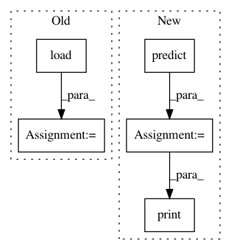

311ac284d99ea7243e0918949f3a499a7a93fab5,examples/decoding/plot_haxby_space_net.py,,,#,14
Before Change
// make X (design matrix) and y (response variable)
import nibabel
from nilearn.image import index_img
niimgs = nibabel.load(data_files.func[0])
X_train = index_img(niimgs, condition_mask_train)
X_test = index_img(niimgs, condition_mask_test)
y_train = target[condition_mask_train]
y_test = target[condition_mask_test]
After Change
// Now Fit SpaceNet with a TV-l1 penalty
decoder = SpaceNetClassifier(memory="cache", penalty="tv-l1")
decoder.fit(X_train, y_train)
y_pred = decoder.predict(X_test)
accuracy = (y_pred == y_test).mean() * 100.
print("TV-l1 classification accuracy : %g%%" % accuracy)
// Visualization
coef_img = decoder.coef_img_
plot_stat_map(coef_img, background_img,
In pattern: SUPERPATTERN
Frequency: 3
Non-data size: 5
Instances
Project Name: nilearn/nilearn
Commit Name: 311ac284d99ea7243e0918949f3a499a7a93fab5
Time: 2015-11-29
Author: gael.varoquaux@normalesup.org
File Name: examples/decoding/plot_haxby_space_net.py
Class Name:
Method Name:
Project Name: philipperemy/keras-tcn
Commit Name: 0cfe82c6beb9a28a5ff7da81b86fa0e93c388f14
Time: 2019-11-20
Author: premy@cogent.co.jp
File Name: tasks/save_reload_model.py
Class Name:
Method Name:
Project Name: PPPLDeepLearning/plasma-python
Commit Name: 30f8696647af482f34e88661c43bf373b84a8da5
Time: 2017-05-29
Author: jk7@tigergpu.princeton.edu
File Name: plasma/models/shallow_runner.py
Class Name:
Method Name: train